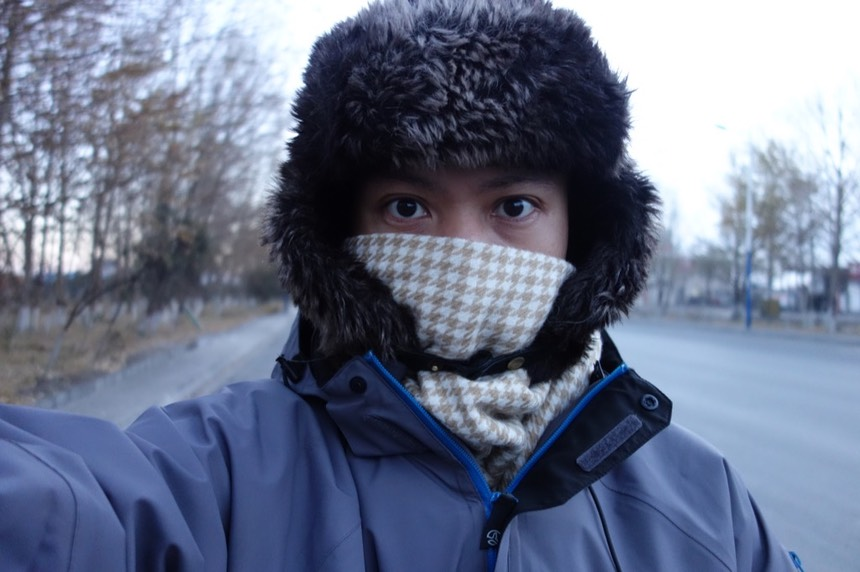

10/28 Day 8 西大灘
最近越睡越好，經常一覺到六點，起床尿尿回來再睡一下回籠覺。
收到米莎莎的訊息，莫古（我養的貓）又生病了。
一時之間很想回家，不如等等就從格爾木搭火車到蘭州，然後搭星期三的飛機吧（一周只有星期一、三有航班）
正好昨天幫我修車的車店可以拿紙箱裝小喵號，不用煩惱去哪邊找箱子。
可是另一方面我又很不甘心！
都大老遠來到青藏的起點格爾木，又騎單車又搭巴士，就這樣掉頭走算什麼？
一大早就陷入兩難的掙扎，後來決定往前騎到30公里外的檢查站，把這決定交給老天。
姜師傅有教：“不要說自己要去西藏，就說自己是格爾木人，要去山上看風景就好。”

好冷，圍巾已經變成每天不可或缺的寶貝，鼻子跟嘴巴呼氣出來的部分，都會結成一片冰在圍巾上。
其實如果我真的很想回家，大可以用自爆式的問答。
”我要去拉薩，來自台灣。“ 然後等著被檢查站擋下來，趕回去搭火車。
身為台灣人，實在對冷的概念就是十度左右這樣的寒流叫做冷，零度或是零度以下的世界，對我來說沒有差別，就是好冷好冷。
路樹灌溉的水都結冰了，每天清晨在太陽出現之前，空氣中都還瀰漫著夜裡尚未散去的酷寒，大口呼吸非常的醒腦。
天亮的時間變晚了，快八點才慢慢亮。
往拉薩的路牌，看起來是那樣的近，彷彿觸手可及，實際上卻又那樣的遙不可及。
也有個念頭是“這次就當探路，先騎到格爾木，下次再從格爾木往拉薩騎。”往檢查站的路上一直在想個回家的漂亮藉口。
但我要解釋給誰聽呢？ 能不能說服自己才是重點吧，其他人怎麼想根本就無關痛癢不是嗎？
哇嗚！！心裡按耐不住澎湃！ 這就是貨真價實的“青藏公路起點“！！！（應該吧？）
一路騎行30公里，想說怎麼不見檢查站？
等等要是被擋下來不給過，我還要騎行30公里回頭到格爾木。
檢查站就出現了，明顯因為淡季所以路旁大型的分流車道並沒有使用。一眼看去也沒有公安在外駐足。
緩慢的騎過檢查站，正當我懷疑有沒有人值守時。
崗哨的窗戶突然打開，冒出兩顆人頭，四隻眼睛，直盯著我瞧。
「去那呢？」 公安問道
「崑崙山。」回答的時候，手往前指。我沒說謊，的確會經過崑崙山。
「打那來的？」公安追問
「格爾木。」一派輕鬆的回答，回答的時候，手往後指。我沒說謊，剛剛真的從格爾木來。
「慢慢騎，注意安全呀！」公安說完就關上窗戶
我連單車都沒停下過，一切的問答都在緩慢的騎乘中進行，就這樣，過關了。
不敢光明正大的拍照，好不容易通關了，要是因為拍一張照片引起公安注意，又被抓回去盤問的話就得不償失。
後頭的車輛就真的會被攔下來檢查，騎自行車比較容易通關的這個領悟，當年一路騎到巴黎時就有所體會，只能說真～爽～
看來這就是老天幫我做的決定，回家等再等等了，前進吧！
其實一早上的猶豫和困惑，在看到青藏公路的牌坊時，就已經一掃而空了，人已經站在起點，豈有棄賽的道理？
一過檢查站沒幾步路就是一個大加油站，這是首度花錢買水之外的飲料喝，因為今天的水不太夠。
運氣好的不只順利通關，今天很難得吹起了愉悅的順風。
自從離開格爾木開始就是緩上坡，但多虧順風的幫忙，騎起來無比輕鬆快活。風向對了，上坡跟下坡一樣容易。
新鋪的柏油路面，騎起來很舒適，青藏公路都是柏油路段（施工的路除外），很適合騎單車旅行（無誤）。
這個2800算是個冷笑話，除了表示里程之外，剛好格爾木的海拔也是2800。另外心算一下，距離拉薩還剩下1080公里～
今天離開格爾木（2800）之後就是爬坡，一路會爬上4000海拔的世界，接著就是平均海拔4500的青藏高原，直到拉薩。
從這圖看來，我之前辛苦爬的日月山、橡皮山，根本都只是個小坡而已，另外都蘭〉格爾木是緩下坡路，更是無趣的戈壁灘，
搭車經過這段路我並不會感到遺憾，反而很慶幸可以在短短的假期中挪出比較多的時間來騎行青藏公路。
由於以為今天就要打包回家，為了減輕小喵號的負擔，一早出發就倒光了兩個1公升的大水壺，只剩兩瓶保特瓶（ 650ml）撐著喝。
路上的告示牌很多塗鴉，而且大多是跟單車騎士相關的 XD 雖然這樣很不好～看是看起來總是令人開心。
好像看到很多前輩的靈魂在這邊駐足過，然後前進，而我也正在邁向這條無數人用單車騎行過的路上。
一直覺得今天很像在西部的沙漠裡面騎車，難道戈壁灘的景色依然揮之不去嗎？
雖然駕駛沿路都會亂丟垃圾，但應該多少有人負責打掃，所以基本上沿路都算很乾淨，
路旁也會擺些垃圾桶，但我真的好奇會有駕駛特地停車丟垃圾？
一來它不在路邊（大概怕被撞壞吧）要離開路面走幾步路才會到，使用意願應該不高。
二來它太小也太不起眼了，我要靠近看才知道那是垃圾桶，更何況是開車飛速而過的駕駛。
這個用石頭排成一格一格很漂亮的東西，看起來像是石頭的農田，當然我也是一頭霧水不知道這有何作用。
後來聽到有人聊天，才知道原來這是為了保護草所設計的，離開格爾木之後就沒有樹了（不是開玩笑的，真的沒有樹）
在一些刻苦的路段，就連草都沒有，已經稀薄的空氣，顯得更難呼吸到氧。
這個可愛的小房子，就是俗稱的“道班”是青藏公路養護人員住的地方，一路上大約每40公里左右就會出現。
在規劃騎行路線的時候，有想過要是萬一遇到什麼意外，可以去道班求助或是住宿（要錢的），也可以搭伙吃飯（如果剛好用餐時間）
不知道什麼湖，水藍的顏色很奇妙，看得我有點渴，太陽出來之後，溫度就慢慢提升，以往還會提升到20度左右。
現在有個5度就要拍拍手，之後有恢復到零度以上的世界就要喊讚了。
靠夭～爛路出現了。
施工中，為了有前面騎著這麼爽的柏油路，青藏公路上不時的會有施工的路段，遇到就只能認了。
爛路、逆風、下雨、夜騎，都是騎單車旅行的障礙，沒有良方，只能克服或是接受。
在爛路上或騎或牽的緩慢前進，想說什麼時候才會走完這一段施工的路面，不時的還要被大卡車經過所揚起的沙塵洗禮一下。
感動的瞬間，爛路和柏油路的交接處，終於可以好好騎車了。
今天的飲水挺吃緊，在水要喝光的時候，剛好抵達納赤台，表示可以吃午餐和補充飲水了！
這是水文站，可以住宿（應該超便宜），今天的騎行是格爾木（2800）〉納赤台（3600）〉西大灘（4100）。
網路上有建議說可以分成兩天騎，建議可以分段在納赤台住一晚。（我沒意見，請依照個人體力規劃）
因為西大灘的海拔是4100左右，要是一天騎完的話，就等於今天從2800爬升到4100。一來爬很高，二來怕有高原反應。
本來我也想分成兩天慢慢的騎，但是騎到納赤台時間還很早（下午兩點），而且身體狀況極佳，一點也沒有不適的感覺。
中午吃的很好，炒肉片和白飯（終於可以不用在意價錢點想吃的菜，也終於有白飯可以吃了）
餐廳有菜單但是沒標價，完全看老闆心情喊價。
這兩個空空如也的水壺終於可以補充水了，餐廳只有熱水，所以只能裝在大罐子內，
無法倒進小罐的寶特瓶（不耐熱），但兩公升的水也絕對夠喝下半天了。
開價很公道，炒肉片25元，白飯一碗1元，這是出發至今吃的第一碗白飯。（感動，而且好好吃）
附帶一提，茶卡的餐廳一碗白飯的價錢是4元。
可以隨心所欲吃喜歡的東西真開心！
這邊的鍋子燒的材料還是煤炭，再往西藏方向走，就會燒我期待已久的馬糞囉～
相較於可愛的道班，兵站就是很嚴肅的地方！建議不是走投無路的話不要自投羅網呀！（尤其是沒有入藏證的台灣人）

這邊就是個軍營！不是開玩笑的！就是軍營～
雖然看了很多網路文章，知道裡面食宿條件都超級好（有暖氣，夜間會供氧等等），但連一個公安檢查站我都怕得要命，更何況是兵站。
吃飽後趕緊出發，要在太陽下山變得天寒地凍之前，再爬升500公尺，進入海拔4000以上的世界。
手錶就綁在把手上，看資訊非常的方便！不論是溫度、海拔或是現在時間。
以大約每半小時爬升100公尺左右的速度前進，下午四點半的時候已經爬到3900，下一階段就是4000了！
騎公路車上青藏完全沒有問題的，網路上看很多遊記，什麼都會提，吃的，住的，路況等，但就是沒人提到爆胎。
而我自己也很慶幸的，雖然每天早上都要替後輪打氣，但一路騎下來也真的沒有爆胎過。
珍貴的飲水，又喝光一壺了，還剩下一公升可以喝。這水壺雖然是贈品（城市綠洲滿額禮），但是超好用。
一來可以裝熱水，二來還有保溫的效果，當寶特瓶的水全部結凍成冰塊時，只有水壺的水還依然維持能喝的液體狀態。
順風雖然騎起來超爽，但今天一共經過兩段施工路段，長約1公里的路被挖的亂七八糟。
也沒看到有人在施工，也沒有任何的機械停在週邊，只是把路挖的爛爛然後就走人，實在不可取！
反方向過來就笑不出來了，現在這個瞬間，就是柏油路變成爛路的交替時刻。而且在騎完之前，你根本無從得知施工的距離有多長？
用牽的真的很慢，但怕車子會震到壞掉，也怕貨架會斷，所以路況很差的時候，還是得下車牽一段。
看著前方揚起的沙塵，究竟施工路段有多長？苦難何時才會結束？
海拔越高，風勢就變了，順風不在，下午五點正式進入海拔4000的世界，身體沒有不適。
只覺得山頭好白，風變的好冷。太陽還在天上，溫度卻已經掉至零下。
一無所有的路邊突然出現超大型的廠房，原來是崑崙山礦泉水的基地。

而這邊就已經到西大灘了，只是沒看到地名的牌子讓我有點疑惑究竟到了沒？
一直到騎出西大灘兩公里的才驚覺過頭，就在回頭的路上發現了西大灘的牌子。
廢話一般的小常識，有吃住的地方，就一定是個小鄉鎮，它在地圖上一定有個名號，所以千萬別錯過食宿的機會。
太陽下山前，順利抵達今天的目的地，再晚一點可能就不太妙了。
隨著礦泉水工廠不斷擴建，附近也新蓋了所謂美食城，能吃飯、能住宿還有WiFi可以用！

搞的原本那些已經很慘淡經營的飯館們看起來更加殘破不堪。
但對開卡車的人來講，從格爾木出發，西大灘根本只是路過的一個點而已，吃早餐嫌太晚，吃午餐嫌太早，更不用說住宿。
以為有網路的住宿費用會很高，其實也才40元。
原價是50元，老闆說騎自行車有優待，之後又陸續入住一些人，老闆還特別交代說我不要講優待的事，但也許是因為他們比我便宜？
而且現在的住宿費都是算一床，而不是一房了。
睡覺大多是通鋪，或是上下兩層的雙人床，怎麼睡都沒關係，可以讓小喵號跟我在一起就好。
單車放在房間內，看起來那麼自然，但卻不是每一個旅館的老闆都能接受。
肚子很餓，老闆說身體很冷的話，就吃砂鍋吧～很驅寒的。
以為很貴，不過也才20元！
玲琅滿目的菜單，不虧是美食城呀，砂鍋在最右下角，有羊、牛、雞三種口味。通通20元。
老闆有個好可愛的小孩，在我還沒給他東西吃時就纏著我。
而在我給他吃奶油三明治的餅乾後更是不得了～
吃完一個吵著要下一個，我說沒了。（我說謊了，但那畢竟那是我很重要的戰備乾糧）
他就有點愛哭的樣子，爸爸嚇阻他不要再纏著我，但這只讓他脾氣更壞，吵著要吃東西。
後來我又拿了一個餅乾給他，他才破涕為笑。
等爸爸比較不忙後（餐廳生意很好）就帶他去隔壁超市買了一大袋的小蛋糕，
他也報恩般的（爸爸教的）請我吃一個。
我看著這個麵包，有三個想法。
一：看起來比我自己帶的餅乾好吃很多。
二：雖然已經是常態，但是看到這些因為氣壓低而膨脹起來的包裝袋都覺得想笑。
三：隔壁有雜貨店。等等吃完飯去看看有什麼能買。
碗餐的羊肉砂鍋非常豐盛，有很多的羊肉、整顆水煮蛋、白木耳、麵條、粉絲、蔬菜、菇類等。
味道一流，可以的話，明天真想在這吃過早餐後再出發。
飯後想刷個牙，餐廳內水龍頭的水壓很低，絹絹細流，牙膏凍的擠不太出來。

吃飽後趁著大地還沒被凍住，去隔壁的超市看看，說是隔壁，但必須經過外面，無法從室內直接過去。
所以不能開玩笑，太陽已經下山，氣溫是零下十度，要很嚴肅。（我覺得自己好嚴肅=.=）
去超市本想買氧氣“瓶”但沒有，只有枕頭大小的氧氣“袋”，太大了，騎單車根本帶不動。
另一種選擇，頂頂大名紅景天，小罐50元（30粒）。
注意紅景天是預防作用，不是等高原反應發作再吃，所以馬上就先吃兩粒（話說我都已經身在高原了...）

高原反應的藥跟牌子都很多，任君挑選呀～也還好雜貨店有賣藥，因為我在格爾木完全忘了買藥跟氧氣瓶。
接下來要按三餐吃藥，身處4100海拔的我，雖然目前身體完全無異狀，但明天要爬海拔更高的崑崙山，還是別太鐵齒好。
隔壁房的通鋪有人在室內抽煙，我佩服他能在高原抽煙，所以就忍了。
希望晚上室內至少能有十度，我一定會緊緊挨著電熱毯，蓋上兩條棉被哪也不去。
從我躺著的地方，所看出去的景色，今天住的人不多，這間只有我一個人，另外一間大概有4~5個。
今天沒擦澡，只有洗臉刷牙就上床睡覺，因為人來人往走個不停讓我不太好意思脫衣服擦澡。
糟糕！廁所在戶外有點距離的地方，清晨上廁所一定冷的很要命，而且有想大便的預感...（室內廁所真的很重要）
試著問了明天的天氣，但是沒有明確的答案，他們說山上的天氣說變就變，可能早上還出大太陽，下午就下大風雪。
本來我不相信，這樣天氣預報要怎麼報呢？直到自己也遇到瞬息萬變的氣候，才體認到山上的天氣，真的說變就變。
今日花費
5 加油站商店的果汁牛奶
25 午餐 炒肉片（豬肉、洋蔥、青椒）
1 白飯
20 晚餐 羊肉砂鍋
50 紅景天
7 雪餅
40 住宿 通鋪的一床 （50元減價下來 有網路、電熱毯）
----
148
今日騎乘
騎乘時間 08：36：20
距離 127.2km
平均速度 14.9km
路線圖 (Google Map 連結)